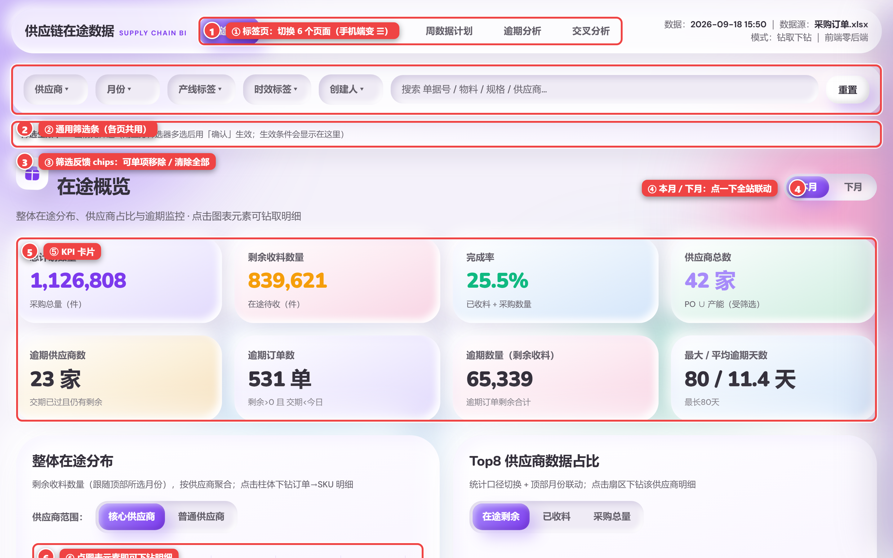
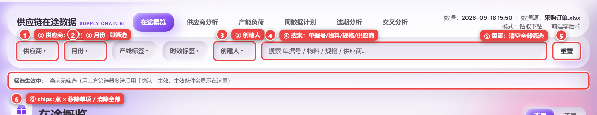
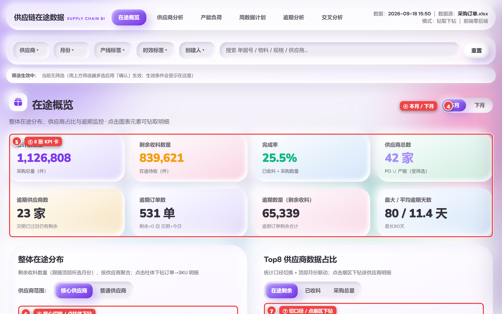
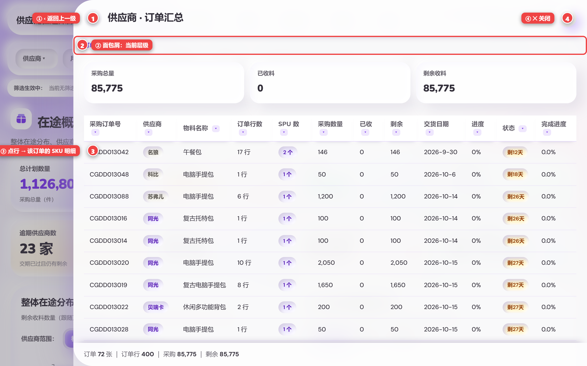
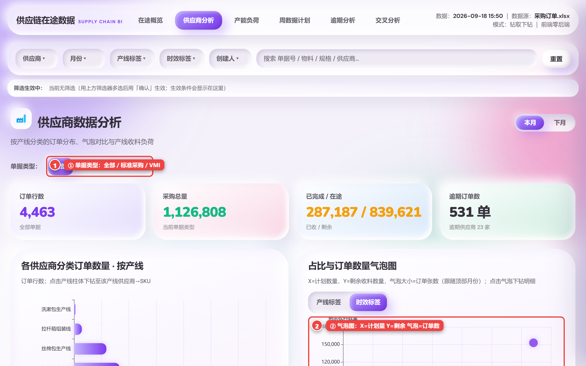
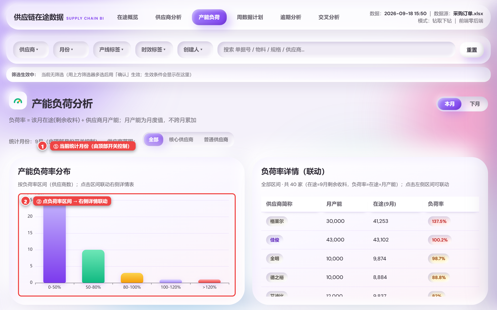
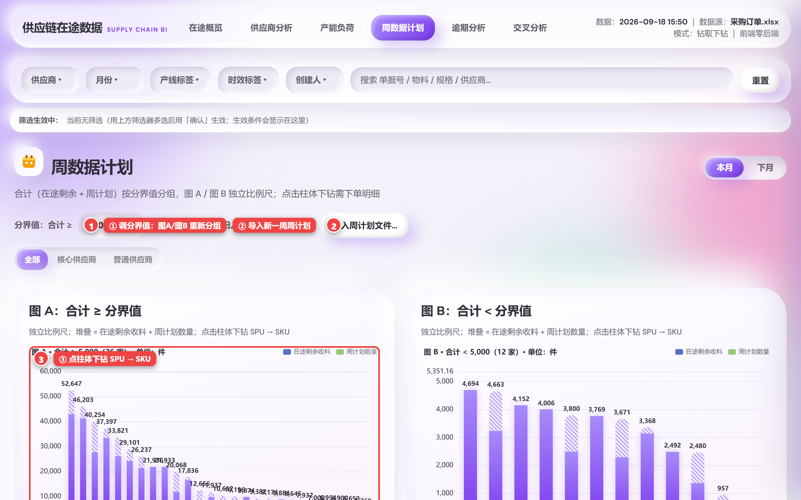
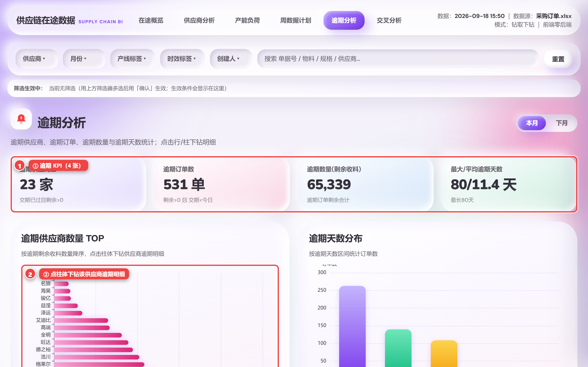
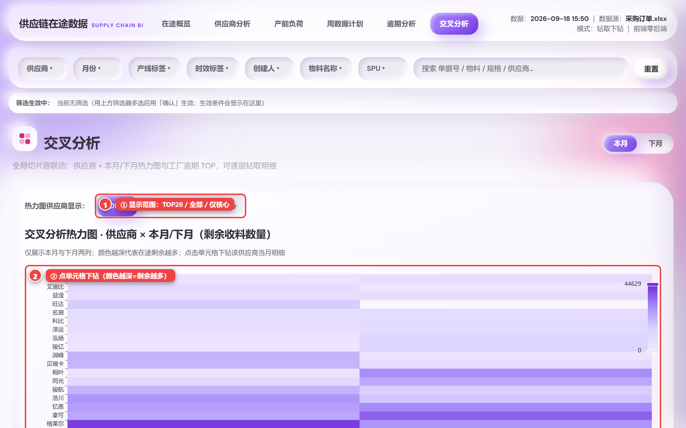
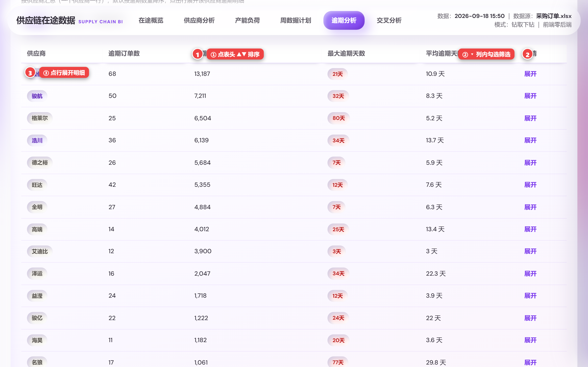

打开网页后的第一屏：① 标签页切换 6 个页面；② 通用筛选条；③ 筛选反馈 chips；④ 本月/下月开关；⑤ KPI 卡片；⑥ 点图表元素即可下钻。

① 供应商下拉多选；② 月份；③ 创建人；④ 搜索（单据号/物料/规格/供应商）；⑤ 重置清空全部；⑥ 已生效筛选 chips：点 × 移除单项或清除全部。
每个页面标题右侧都有「本月 / 下月」；点一下全站联动切换统计月份。逾期分析与交叉分析刻意保持全量/双月，不跟随。

8 张 KPI 卡（总计划/剩余/完成率/供应商数/逾期供应商/逾期订单/逾期数量/逾期天数）；整体在途分布（核心/普通切换，点柱体下钻）；Top8 占比（切口径，点扇区下钻）；每日需交趋势（点数据点下钻当日订单）。

点击图表/表格行从右侧滑出：① ‹ 返回上一级；② 面包屑显示当前层级；③ 点某行 → 进入该订单的 SKU 明细；④ ✕ 关闭。两级 = 订单汇总 → SKU 明细。

① 单据类型：全部/标准采购/VMI；气泡图 X=计划数量、Y=剩余收料、气泡大小=订单张数（产线/时效口径切换）；两张汇总表点「详情」下钻。

负荷率 = 该月在途(剩余收料) ÷ 供应商月产能（不跨月累加）。① 统计月份由顶部开关控制；② 点负荷率区间 → 右侧详情表联动。>100% 超额 / 80–100% 饱和 / <80% 空闲。

合计 = 在途剩余 + 周计划，按分界值分图 A（≥）/图 B（<），两图独立比例尺。① 调分界值重新分组；② 导入新一周周计划；③ 点柱体下钻 SPU → SKU。

逾期 = 交期 < 今天 且 剩余收料 > 0。① 4 张逾期 KPI；② 点 TOP 柱体下钻该供应商逾期明细；③ 汇总表一行一家，点行展开明细。本页不跟随本月/下月开关。

供应商 × 本月/下月热力图：① 显示范围 TOP20/全部/仅核心；② 点单元格下钻该供应商当月明细，颜色越深 = 剩余越多；另有工厂逾期数量 TOP。

① 点表头 ▲▼ 升/降序；② 关键列 ▾ 列内勾选筛选；③ 点行展开明细。明细表自动带「完成进度」列，未满 100% 保留 1 位小数。